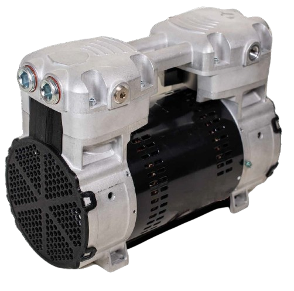

NEW 106R SERIES
ROCKING PISTON COMPRESSOR
A quieter, longer-lived,
next-generation air
compressor that delivers
higher pressures and
greater air flow.

The new Gast 106R rocking piston compressor is the superior solution to its nearest competitors. We rethought everything about air compression, putting more than 10,000 development hours, 101 years of knowledge, and unsurpassed industry leadership to work to you. The result: a next-generation air compressor that will take your product to the next level of performance.